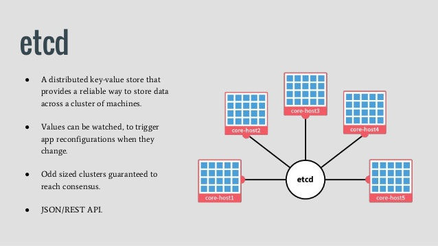

| 版本 | 日期 | 状态 | 修订人 | 摘要 |
|---|---|---|---|---|
| V1.0 | 2018-04-17 | 创建 | 开源方案 | 初始版本 |

etcd 是 CoreOS 团队发起的开源项目，基于 Go 语言实现，做为一个分布式键值对存储，通过分布式锁，leader选举和写屏障(write barriers)来实现可靠的分布式协作。
可用于服务注册发现与共享配置，具有以下优点。
简单 ： 相比于晦涩难懂的paxos算法，etcd基于相对简单且易实现的raft算法实现一致性，并通过gRPC提供接口调用
安全：支持TLS通信，并可以针对不同的用户进行对key的读写控制
高性能：10,000 /秒的写性能
| 主机名 | IP地址 | 域名 | etcd版本 |
|---|---|---|---|
| etcd0 | 192.168.124.22 | etcd0.51know.info | etcd-3.2.15-1.el7.x86_64 |
| etcd1 | 192.168.124.23 | etcd1.51know.info | etcd-3.2.15-1.el7.x86_64 |
| etcd2 | 192.168.124.24 | etcd0.51know.info | etcd-3.2.15-1.el7.x86_64 |
| 证书名称 | 配置文件 | 用途 |
|---|---|---|
| etcd-root-ca.pem | etcd-root-ca-csr.json | etcd 根 CA 证书 |
| etcd.pem | etcd-gencert.json、etcd-csr.json | etcd 集群证书 |
[root@openshift-master1 /opt]# wget https://pkg.cfssl.org/R1.2/cfssl_linux-amd64
[root@openshift-master1 /opt]# wget https://pkg.cfssl.org/R1.2/cfssljson_linux-amd64
[root@openshift-master1 /opt]# chmod +x cfssl_linux-amd64 cfssljson_linux-amd64
[root@openshift-master1 /opt]# mv cfssl_linux-amd64 /usr/local/bin/cfssl
[root@openshift-master1 /opt]# mv cfssljson_linux-amd64 /usr/local/bin/cfssljson
[root@openshift-master1 /opt]# cat etcd-root-ca-csr.json
{
"key": {
"algo": "rsa",
"size": 4096
},
"names": [
{
"O": "etcd",
"OU": "etcd Security",
"L": "Beijing",
"ST": "Beijing",
"C": "CN"
}
],
"CN": "etcd-root-ca"
}
[root@openshift-master1 /opt]# cat etcd-gencert.json
{
"signing": {
"default": {
"usages": [
"signing",
"key encipherment",
"server auth",
"client auth"
],
"expiry": "87600h"
}
}
}
[root@openshift-master1 /opt]# cat etcd-csr.json
{
"key": {
"algo": "rsa",
"size": 4096
},
"names": [
{
"O": "etcd",
"OU": "etcd Security",
"L": "Beijing",
"ST": "Beijing",
"C": "CN"
}
],
"CN": "etcd",
"hosts": [
"127.0.0.1",
"localhost",
"192.168.124.22",
"192.168.124.23",
"192.168.124.24"
]
}
注意: hosts 要将 etcd 集群的所在节点的 IP地址,主机名(FQDN),都要加入到此列表中
[root@openshift-master1 /opt]# cfssl gencert --initca=true etcd-root-ca-csr.json | cfssljson --bare etcd-root-ca
[root@openshift-master1 /opt]# cfssl gencert --ca etcd-root-ca.pem --ca-key etcd-root-ca-key.pem --config etcd-gencert.json etcd-csr.json | cfssljson --bare etcd
#生成的证书列表如下
[root@openshift-master1 /opt]
# ll
总用量 36
-rw-r--r-- 1 root root 2033 3月 27 18:09 etcd.csr
-rw-r--r-- 1 root root 513 3月 27 18:09 etcd-csr.json
-rw-r--r-- 1 root root 204 3月 27 18:08 etcd-gencert.json
-rw------- 1 root root 3247 3月 27 18:09 etcd-key.pem
-rw-r--r-- 1 root root 2415 3月 27 18:09 etcd.pem
-rw-r--r-- 1 root root 1708 3月 27 18:09 etcd-root-ca.csr
-rw-r--r-- 1 root root 232 3月 27 18:07 etcd-root-ca-csr.json
-rw------- 1 root root 3243 3月 27 18:09 etcd-root-ca-key.pem
-rw-r--r-- 1 root root 2078 3月 27 18:09 etcd-root-ca.pem
[root@openshift-master1 /opt]# yum install etcd -y
[root@openshift-master1 /opt]# cp *.pem /etc/etcd/
[root@openshift-master1 /opt]# chown -R etcd:etcd /etc/etcd/
[root@openshift-master1 /opt]# chmod -R 755 /etc/etcd/
[root@openshift-master etcd]# cat /etc/etcd/etcd.conf
#[Member]
ETCD_DATA_DIR="/var/lib/etcd/default.etcd"
ETCD_LISTEN_PEER_URLS="https://192.168.124.22:2380"
ETCD_LISTEN_CLIENT_URLS="https://192.168.124.22:2379,http://localhost:2379"
ETCD_NAME="etcd0"
ETCD_HEARTBEAT_INTERVAL=500
ETCD_ELECTION_TIMEOUT=2500
#[Clustering]
ETCD_INITIAL_ADVERTISE_PEER_URLS="https://192.168.124.22:2380"
ETCD_ADVERTISE_CLIENT_URLS="https://192.168.124.22:2379"
ETCD_INITIAL_CLUSTER="etcd0=https://192.168.124.22:2380,etcd1=https://192.168.124.23:2380,etcd2=https://192.168.124.24:2380"
ETCD_INITIAL_CLUSTER_TOKEN="etcd-cluster"
ETCD_INITIAL_CLUSTER_STATE="new"
#[Security]
ETCD_CERT_FILE="/etc/etcd/etcd.pem"
ETCD_KEY_FILE="/etc/etcd/etcd-key.pem"
ETCD_CLIENT_CERT_AUTH="true"
ETCD_TRUSTED_CA_FILE="/etc/etcd/etcd-root-ca.pem"
ETCD_AUTO_TLS="true"
ETCD_PEER_CERT_FILE="/etc/etcd/etcd.pem"
ETCD_PEER_KEY_FILE="/etc/etcd/etcd-key.pem"
ETCD_PEER_CLIENT_CERT_AUTH="true"
ETCD_PEER_TRUSTED_CA_FILE="/etc/etcd/etcd-root-ca.pem"
ETCD_PEER_AUTO_TLS="true"
[root@openshift-master1 /opt]# systemctl enable etcd
[root@openshift-master1 /opt]# systemctl start etcd
yum install etcd -y
[root@openshift-master ~]# cd /etc/etcd/
[root@openshift-master etcd]# ll
total 20
-rwxr-xr-x 1 etcd etcd 920 Apr 18 06:11 etcd.conf
-rwxr-xr-x 1 etcd etcd 3243 Apr 18 06:07 etcd-key.pem
-rwxr-xr-x 1 etcd etcd 2167 Apr 18 06:07 etcd.pem
-rwxr-xr-x 1 etcd etcd 3247 Apr 18 06:07 etcd-root-ca-key.pem
-rwxr-xr-x 1 etcd etcd 2078 Apr 18 06:07 etcd-root-ca.pem
[root@openshift-master1 etcd]# scp * openshift-master2:/etc/etcd/
etcd.conf 100% 920 0.9KB/s 00:00
etcd-key.pem 100% 3243 3.2KB/s 00:00
etcd.pem 100% 2167 2.1KB/s 00:00
etcd-root-ca-key.pem 100% 3247 3.2KB/s 00:00
etcd-root-ca.pem 100% 2078 2.0KB/s 00:00
ETCD_LISTEN_PEER_URLS="https://192.168.124.23:2380"
ETCD_LISTEN_CLIENT_URLS="https://192.168.124.23:2379,http://localhost:2379"
#ETCD节点名称 按顺序增加即可
ETCD_NAME="etcd1"
ETCD_INITIAL_ADVERTISE_PEER_URLS="https://192.168.124.23:2380"
ETCD_ADVERTISE_CLIENT_URLS="https://192.168.124.23:2379"
[root@openshift-master etcd]# export ETCDCTL_API=3
[root@openshift-master etcd]# etcdctl member list
2da38978bc038ba1, started, etcd1, https://192.168.124.22:2380, https://192.168.124.22:2379
56e71904a9636fcf, started, etcd0, https://192.168.124.23:2380, https://192.168.124.23:2379
faf6915e4bb01350, started, etcd2, https://192.168.124.24:2380, https://192.168.124.24:2379
[root@openshift-master etcd]# etcdctl --cacert=/etc/etcd/etcd-root-ca.pem --cert=/etc/etcd/etcd.pem --key=/etc/etcd/etcd-key.pem --endpoints=https://192.168.124.22:2379,https://192.168.124.23:2379,https://192.168.124.24:2379 endpoint health
https://192.168.124.22:2379 is healthy: successfully committed proposal: took = 3.852481ms
https://192.168.124.23:2379 is healthy: successfully committed proposal: took = 4.035725ms
https://192.168.124.24:2379 is healthy: successfully committed proposal: took = 1.489679ms
至此,etcd集群安装完成
如果在安装过程中，可能需要重新初始化数据可以参考如下方法
导出API版本，这里使用3版本
export ETCDCTL_API=3
获取key
etcdctl get / --prefix --keys-only
删除 openshift.io 相关内容
etcdctl del --prefix=true /openshift.io
删除 kubernetes.io
etcdctl del --prefix=true /kubernetes.io
再次查看
etcdctl get / --prefix --keys-only
[root@openshift-master ~]# etcdctl member list
2da38978bc038ba1, started, etcd1, https://192.168.124.30:2380, https://192.168.124.30:2379
56e71904a9636fcf, started, etcd0, https://192.168.124.22:2380, https://192.168.124.22:2379
faf6915e4bb01350, started, etcd2, https://192.168.124.46:2380, https://192.168.124.46:2379
[root@openshift-master ~]# etcdctl --cacert=/etc/etcd/etcd-root-ca.pem --cert=/etc/etcd/etcd.pem --key=/etc/etcd/etcd-key.pem --endpoints=https://192.168.124.22:2379,https://192.168.124.30:2379,https://192.168.124.46:2379 endpoint health
https://192.168.124.22:2379 is healthy: successfully committed proposal: took = 14.574112ms
https://192.168.124.30:2379 is healthy: successfully committed proposal: took = 16.811619ms
https://192.168.124.46:2379 is unhealthy: failed to connect: dial tcp 192.168.124.46:2379: getsockopt: connection refused
Error: unhealthy cluster
这里删除 etcd2 集群内序号 faf6915e4bb01350
etcdctl --cacert=/etc/etcd/etcd-root-ca.pem --cert=/etc/etcd/etcd.pem --key=/etc/etcd/etcd-key.pem \
--endpoints=https://192.168.124.22:2379,https://192.168.124.30:2379,https://192.168.124.46:2379 member remove faf6915e4bb01350
# 修改节点配置
ETCD_INITIAL_CLUSTER_STATE=existing
# 删除etcd数据目录
rm -fr /var/lib/etcd/member
etcdctl --cacert=/etc/etcd/etcd-root-ca.pem --cert=/etc/etcd/etcd.pem --key=/etc/etcd/etcd-key.pem \
--endpoints=https://192.168.124.22:2379 member add etcd2 --peer-urls="https://192.168.124.46:2380"
$ systemctl restart etcd